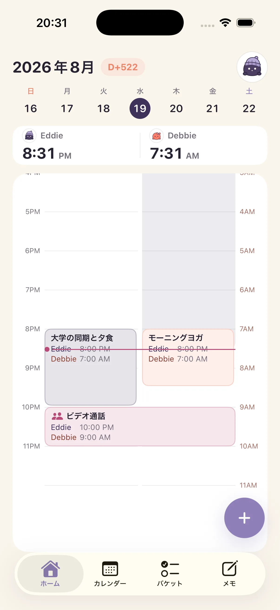
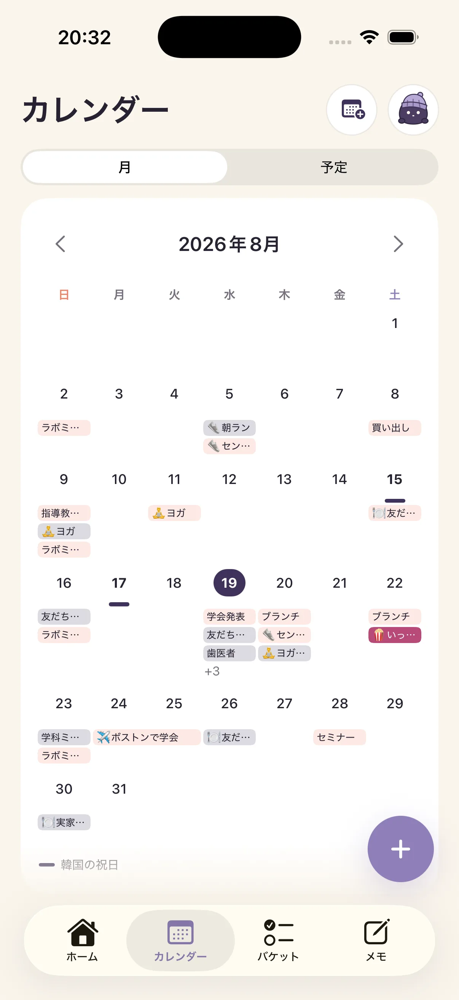
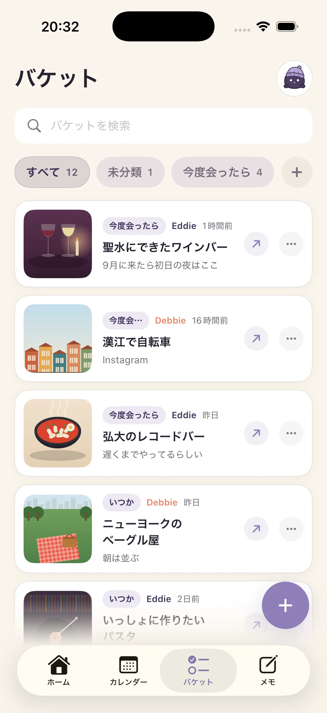
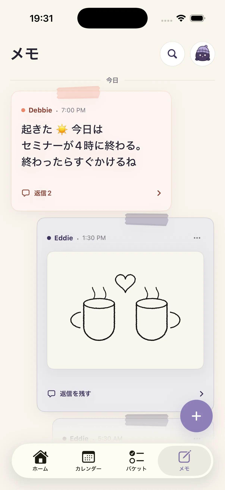

時間と天気
おたがいの今をひとつの画面に。
Naru
ふたりの空き時間を、Naru が見つけます。
離れていても、時間が合わなくても。

ONE MOMENT, TWO DAYS
自分の予定と相手の予定をそれぞれの現地時間で、ふたりの空き時間までひとつの画面に。
WHY WE MADE NARU
カップルアプリはいくつか使ったけど、
結局やることがひとつ増えただけでした。
ひとりの退勤が、もうひとりの出勤になりました。 「今電話しても大丈夫?」「今週末は何時が空いてる?」を毎回計算して聞くかわりに、 もう使っているカレンダーでおたがいの一日を見る方法が必要でした。それで Naru を作りました。
離れているときにとくに役立ち、近くにいる日もふたりの予定と記録はそのまま続きます。
01
THE PRESENT
寝ているのか、予定中なのか、ふたりとも空いているのか。 位置情報なしで、時間とカレンダーだけでわかります。
おたがいの今をひとつの画面に。
予定はそれぞれの現地時間にぴったり。
ふたりとも余裕のある時間を Naru が見つけます。
03
THE THINGS YOU SHARE
外部カレンダーはつなぎ、次のデートと短いメモはいっしょにためていきます。
CALENDAR · 01
Naru は選んだ iPhone カレンダーと Google カレンダーの予定を読み取り専用で取り込み、 Naru とウィジェットに表示します。Google カレンダーの予定を作成・変更・削除することはなく、 時差があってもそれぞれの現地時間で見せます。

BUCKET · 02
YouTube・Instagram・写真アプリから共有すると、リンクも文章も写真もひとつのリストに。ためた時間とタグで探して、タップすれば写真と元の投稿を大きく確認できます。ふたりで100件まで、本当に見たいものだけ軽く集めます。

NOTES · 03
「会議が終わったら10分だけ通話?」「家に着いたら教えて」のように、返事を急かさないメモを残します。

NARU MEMBERSHIP
パートナーと初めてつながった瞬間、すべての機能が7日間開きます。 カード登録も、体験後の自動課金もありません — ふたりで実際に使ってから選べばいい。
7日後も無料
最初の7日はすべて無料 · Naru メンバーシップ
メンバーシップはひとりが支払えば、つながったふたりに適用されます。 月額・年額は解約するまで自動更新され、iOS の設定からいつでも解約できます。 永久ライセンスは一度支払えば更新はありません。くわしい条件は利用規約に。 体験が終わっても、過去の予定とふたりでためた記録は消えません。
MADE FOR TWO
リアルタイムの位置は受け取りません。
ふたりの記録を広告に使いません。
接続を切れば共有もすぐ止まります。

TESTFLIGHT
App Store 公開の準備をしているあいだ、TestFlight で Naru を先に使えます。下のリンクを iPhone で開けばすぐインストールできます。初めてつなぐとすべての機能が7日間開き、体験が終わっても自動で課金されません。
TestFlight で Naru を入手iPhone に TestFlight アプリが必要で、iOS 17 以上で動きます。いっしょに使う相手にも同じリンクを送ってください。